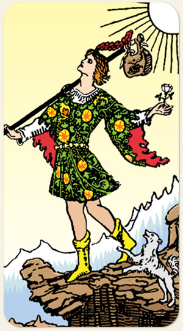

O novo começo, a espontaneidade e o salto de fé. Ele encarna a energia da potencialidade pura: tudo é possível porque nada ainda foi definido. É o andarilho espiritual que confia tanto no universo que não sente necessidade de carregar o peso do passado ou as ansiedades do futuro.
É o ponto de partida e de chegada de todo o Tarot. A alma em seu estado mais genuíno, antes de ser moldada pelas experiências do mundo. Ele não é um mendigo ou um louco varrido, mas um vibrante viajante espiritual.
É o salto de fé, a espontaneidade e os novos começos. Ele carrega consigo o potencial infinito e a liberdade absoluta. É a mente que ainda não foi contaminada pelo medo do fracasso ou pelo julgamento alheio.
Positivo: Leveza diante da possibilidade do perigo, alegria, inocência, ter uma postura positiva, aproveitar a vida, viver uma aventura, início de uma jornada, encontrar alegria na tristeza.
Negativo: Não ter noção do perigo, alienação, falsas alegrias, ilusão, ver perigo onde não tem ou ver segurança onde não tem, pessoa perdida, desorientada, ingenuidade tola.
Símbolos: Rosa Branca, Trouxa, Precipício, Cachorro, Sol, Montanhas Nevadas, Pena Vermelha.
Cores: Amarelo, Verde, Vermelho, Azul, Branco, Marrom.
Elementos: Espírito e Espírito.